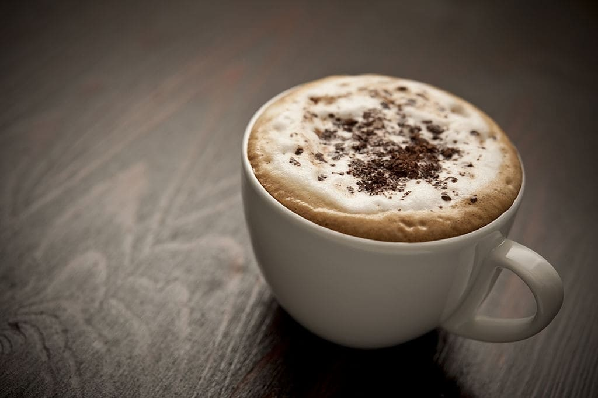

Café Moka

Una variante italiana que contiene un tercio de expreso, dos de leche vaporizada y chocolate.
Café Macchiato

Otra variante de Italia de los 80'. Con leche justa, caliente y muy espumada.
Café Capuccino

Uno de los cafés mas conocidos, con leche voluminizada y vaporizada, con una textura cremosa.
Café Ristretto
Un famoso "short shot", con distintos balances de concentración, a elección.